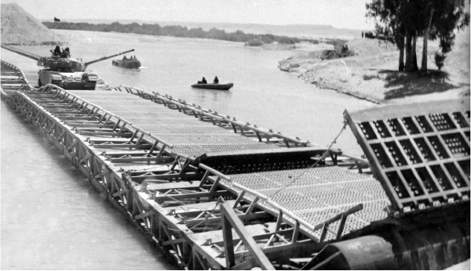

Chabad’s “Military Operation” in the Wake of the Yom Kippur War
A fascinating account by journalist Menachem Barash a ” h about a special operation waged by Chabad Chassidim among IDF soldiers on the front lines during the Yom Kippur War. * Presented to mark forty years since the Yom Kippur War .

Targets: All divisions of the army on land, in the air and at sea; on all the fronts – in the Sinai, west of the Canal, Merchav Shlomo (as the southern Sinai was called then), the Golan Heights, the Jordan Valley, and bases in the center of the country.
Mission: To make contact with commanders and with as many soldiers as possible and bring them the Rebbe’s message and blessing.
Mission Forces: A unit of Tzeirei Chabad, augmented by dozens of young people serving in the army who utilized brief respites from military tasks to man the operation command center so as to ensure its success. Aid services and tactical support in the field were secured by the IDF General Staff, the Chief Education Officer. This also included commanders of the various services and commanders in the field.
Commander in Chief: The Lubavitcher Rebbe who mobilized the “forces” from his headquarters in New York. It all went like clockwork with effective planning and incredible precision. Secrecy shrouded the mission from beginning to end because that is what the Rebbe ordered. The mission lasted a few weeks with tens of thousands of soldiers participating.
***
“It began,” said Chanoch Glitzenstein, who ran one of the divisions, “a few days after the ceasefire. To be more precise, it was on Motzaei Shabbos, Parshas Noach, October 27. Nine Lubavitchers from Eretz Yisroel were still in New York, having spent the Yomim Nora’im and Sukkos with the Rebbe. They were suddenly called into the Rebbe’s room and the Rebbe said: Due to the events that transpired on Yom Kippur, I request that some action take place whose purpose will be to encourage the soldiers on the front lines, to raise their spirits and to infuse them with new hope. Take some bottles of mashke with you from Kos shel Bracha (that is considered to be on the level of the ‘wine that was preserved from the Six Days of creation’), and take some silver coins and go to the Israeli soldiers in their camps and on their bases. Serve them mashke and drink l’chaim. Give each soldier two coins, one for tz’daka in my name and my shlichus and the other for his personal use or to keep as a kameia (charm), and also copies of two letters that the Rebbe wrote during the battles to the soldiers who asked him for a bracha. Not one soldier in the IDF should be overlooked. This operation needs to be done with the knowledge of the General Staff of the IDF and with its explicit permission. In each of the units that will spread out to all the army bases, it would be desirable to include someone who spent the Yomim Nora’im with the Rebbe who can explain the significance of the war and the results. Not a word should be publicized before carrying out this mission to its end.”
That is what the Rebbe instructed, and he gave his shluchim his blessings.
When the shluchim went home and told the leadership what the Rebbe had said, the Chabadnikim got enthusiastically to work. Within a few days, a headquarters was set up, the “forces” were enlisted, and then they were divided into units. The army command accepted the idea enthusiastically, although for certain time-related reasons there was some delay in carrying out the activities. In the end, full cooperation was secured. The army provided Chabad with vehicles, security, escorts, guidance and even special flights to distant bases. Chabad prepared tens of thousands of booklets with: the Rebbe’s blessing to the Israeli soldiers, two letters of the Rebbe along with Divrei Torah from the Tanach and the Oral Torah, and some of the Rebbe’s views about the war and the lessons learned, the holiness of the land, and the obligation to protect it in its entirety and to keep it secure. T’fillin, mashke, cups, pastries, and coins were loaded in boxes into the cars and planes and the operation began.
WEARING A COIN AROUND THE NECK
R’ Glitzenstein:
“First, we went to the bases located in the Center Region command. Chabad in Yerushalayim took responsibility for this section of the front. A hundred of us went, for three days and nights, from base to base, from camp to camp, from outpost to outpost. The Home Front Command and the Education Officer did all that they could to make it easier for the units to reach their destinations and carry out their mission. Vehicles, drivers, escorts, and security were provided. Wherever we went, the commanders already knew about our coming and were ready to welcome us. It went something like this. First we entered the command tent. We offered t’fillin to the commanders. Nobody was opposed and all put on t’fillin. We gave them the booklets with the Rebbe’s message and brachos; we poured cups of mashke and drank l’chaim, to the life of the country, to the lives of the soldiers, and to a quick victory over all enemies of Israel. We gave out the coins, one for tz’daka in the Rebbe’s name and the second for personal use. Then we left.
“The commanders gathered the soldiers. One of the members of the group addressed them and explained the purpose of our mission. We told them that throughout the war the Rebbe did not stop thinking of Israel and the battlefronts and he prayed nonstop for them. We read portions from what the Rebbe said at farbrengens that took place throughout the summer months, in which he hinted to the possibility of war and the need to prepare practically and spiritually-religiously.
“In response to questions, the Rebbe’s position on current problems, the war, the settlements etc. was clarified. We drank l’chaim with each soldier and explained to them about the tz’daka and the coins that the Rebbe sent them. The soldiers were excited about keeping one coin as a segula in time of danger. They asked whether it was permissible to drill a hole in it so it could be worn around the neck. While drinking the mashke, the soldiers wanted to know what Kos shel Bracha is and what is the significance of drinking l’chaim.”
After inspiring words mixed with Divrei Torah and Chassidishe stories, big circles formed and hundreds of soldiers joined along with the Lubavitchers and sang and danced. The singing and dancing went on for hours; in certain instances, late into the night.
“In the Jordan Valley, we were sixty men who broke up into fourteen units. For three days and three nights we combed through all the positions and all the camps. Soldiers grabbed up the coins, drank the mashke and took in the Rebbe’s words, sang and danced, and participated in Evenings with Chabad. They enjoyed the experience.”
In the booklets that were distributed, the Lubavitcher Rebbe notes that the soldiers who were called up and went to war are on the level of tzaddikim gemurim (completely righteous), for the war began on Yom Kippur which atones for all sins. In one of the sichos, the Rebbe stressed that we all must learn from the soldiers who put “naaseh” before “nishma,” and who stand strong in carrying out the orders of those appointed over them. The Rebbe repeated what he said earlier, about the special position the Jews have among the nations, that we have vanquished our enemies until now and will be victorious in all wars until the coming of Moshiach.
Over 100,000 copies were distributed during the campaign. Tens of thousands of additional copies were left in camps and with the Education Officers to be given out on other occasions. The amount of mashke for l’chaims that was consumed was enormous. They mixed into it from bottles of mashke that the Rebbe sent. Tens of thousands of bottles were opened during the campaign in order to provide a small cup for every soldier. Israeli soldiers were called upon to trust in Hashem and not to fear. As a segula, the Rebbe suggested that the soldiers put on t’fillin every day and give more tz’daka and, as much as possible, to do these two mitzvos together with learning Divrei Torah, even the smallest amount, from the booklets they were given.
Days later, the signal was given to begin the campaign in the Golan Heights. Groups of Lubavitchers reached all the way to the Chermon and visited all the outposts and strongholds. Chabad songs and the words of the Rebbe echoed in Syria too, along the ceasefire line.
After the Valley and the Golan it was the turn of Sinai, the west bank of the Canal, Sharm-el-Sheikh and the navy. The Lubavitchers boarded missile boats and all the other ships of the navy and were received with appreciation and joy by the commanders and soldiers alike. In the Golan they met Moshe Dayan and offered him mashke. He smiled and said he was pleased with this campaign. “You drink the mashke,” he said. “I will drink grapefruit juice.”
THE WOUNDED MAN RECOVERED
As is the way with Chassidim, there was no lack of miracle stories, performed with the Rebbe’s power.
A few days ago, a letter arrived from a wounded soldier who is hospitalized in Beer Sheva. He wrote, “I am severely wounded. The pains in my foot are terrible. Yesterday, Chabad came and visited and brought mashke from the Rebbe’s Kos shel Bracha, and they gave out coins to keep and for tz’daka. I did not drink immediately. I left the mashke for the next day. This morning, I woke up and put on t’fillin, as the Chabadnikim suggested. I gave the coin to tz’daka and drank l’chaim from the Rebbe’s mashke. What can I tell you? It’s unbelievable. The pain in my foot went away and I have already asked the nurse to try and get me out of bed. I am sure that I will be able to walk on my two feet. Please, write thanks to the Rebbe … he is amazing … he is amazing … He not only cheered me up; he healed my foot.”
The chairman of the local council of Kfar Chabad, Mr. Davidowitz, said that when he was at the Rebbe for the Yomim Nora’im, the Rebbe gave him a bottle of mashke to distribute in Kfar Safiriya (the old Arab name for Kfar Chabad). On his return to the Kfar, he heard that one of the young people from the Kfar had been severely injured in a tank battle and was hospitalized and unconscious. He immediately thought, perhaps this is what the Rebbe had in mind and he went to the hospital. Friends said that the soldier was hit by a missile and that his watch stopped in the attack. After thinking it over, Mr. Davidowitz realized that it was precisely that day and that time that the Rebbe gave him the bottle of mashke for Safiriya. When he said this to the doctor who was treating the soldier, he agreed to put a drop of the mashke into the man’s mouth. To the amazement of the doctor, the man opened his eyes and regained consciousness.
There are more stories like this.
The commanders did not have enough words to praise Chabad for their remarkable work. The Chabadnikim do not hide their pride and great satisfaction over the “bridgehead” that they managed to secure, and the path they paved to the hearts of the Israeli soldiers.
MENACHEM BARASH A”H
The writer and journalist, Menachem Barash, passed away in Yerushalayim at the age of 88 ten years ago. Barash was one of the first Israeli journalists in Eretz Yisroel. He started out with the Jewish Telegraph news agency (JTA) as soon as he made aliya in 1935. Then he worked as a reporter for Cheirut and in 1946 he began working for Yediot Acharonot in which he served in various capacities.
During the siege of Yerushalayim in the War of Independence, it was Menachem Barash who led the news corps in Jerusalem. As a reporter, he wrote nearly all the news, copied the newspaper on a copying machine, and even went out on the streets in the evening and personally gave out the paper he wrote to the besieged residents.
For many years he worked as editor in chief of the newspaper in Yerushalayim and also wrote articles on Jewish and religious topics, covering a wide array of issues relating to Yerushalayim which he loved so much.
He often covered the Chabad movement and the Rebbe. He wrote about Lubavitch during the Six Day War, the Yom Kippur War, the Cuban Missile Crisis, and many other times.
Beis Moshiach (staff). "Chabad’s “Military Operation” in the Wake of the Yom Kippur War." Beis Moshiach, no. 894 (August 22, 2013).